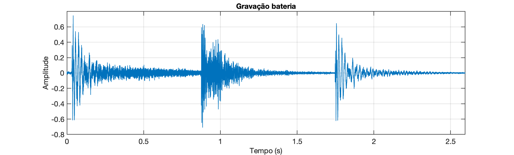

Exemplo de uso de FFT
Ex_1: Carregar o arquivo [drum_seg.wav] e realizar a FFT sobre o mesmo.
Este arquivo resulta num gráfico no domínio tempo como mostrado à seguir:

Solução
xxxxxxxxxx>> dir *.wav * verificando se arquivo está presentebass_note.wav drum_seg_output.wav tom_800Hz_1seg.wav drum_seg.wav speech_seg.wav >> [y,Fs] = audioread('drum_seg.wav');>> t_fim=(length(y)-1)/Fs % descobre valor temporal última amostrat_fim = 2.5952>> f>> figure; plot(t,y)>> axis([0 t_fim -0.8 0.8])>> gridSem dividir o sinal em 3 partes (como sugere seu aspecto visual), vamos obter:
xxxxxxxxxx>> Y=fft(y);>> L=length(Y); % descobre qtdade amostras>> P2=abs(Y/L); % re-escalona magnitudes em função de L>> P1=P2(1:L/2+1); % isolando primeira metade do espectroWarning: Integer operands are required for colon operator when used as index. >> LL = 57225>> P1=P2(1:(L-1)/2+1);>> P1(2:end-1)=2*P1(2:end-1);>> f=Fs/L*(0:((L-1)/2)); % cria vetor (eixo) das frequências>> FsFs = 22050>> figure;>> plot(f,P1)>> title('Espectro do sinal y(t)')>> xlabel("freq. (Hz)")>> ylabel('|fft(y)|')>> grid>> Fs/2ans = 11025E obtemos o seguinte gráfico:
Notamos que dominam mais componentes em baixas frequências.
Podemos tentar isolar os compontes mais relevantes, comparando a maior amplitude obtida no cálculo da FFT e separado amplitudes que alcançam até 25% deste valor:
Na figura anterior, usando o critério dos 25% foram encontrados 132 componentes.
Se o critério for ampliado para mostrar componentes maiores ou iguais à 50% da maior amplitude encontrada, teremos então o seguinte gráfico:
Sob este critério, separamos 31 componentes.
O script separa_componentes.m que gerou este gráfico, também gerou outros resultados:
xxxxxxxxxx>> separa_componentesEntre com limiar para separação em ? 50Componentes relevantes:| # | Freq (Hz) | Amplitude | % | Fase (graus) ||---:|:----------|----------:|:---:|-------------:|| 1 | 43.16 | 0.01201 | 68.6 | -120.38 || 2 | 44.31 | 0.01280 | 73.1 | -165.22 || 3 | 45.47 | 0.01283 | 73.3 | 151.60 || 4 | 48.94 | 0.01260 | 72.0 | 99.06 || 5 | 50.09 | 0.01206 | 68.9 | 70.55 || 6 | 51.25 | 0.01330 | 76.0 | 50.43 || 7 | 52.02 | 0.01064 | 60.8 | -27.33 || 8 | 52.40 | 0.01689 | 96.5 | 20.15 || 9 | 53.17 | 0.01200 | 68.6 | -55.45 || 10 | 53.56 | 0.01750 | 100.0 | -10.16 || 11 | 54.33 | 0.01397 | 79.8 | -89.08 || 12 | 54.72 | 0.01693 | 96.7 | -40.12 || 13 | 55.49 | 0.01394 | 79.6 | -120.90 || 14 | 55.87 | 0.01627 | 93.0 | -70.06 || 15 | 56.64 | 0.01340 | 76.6 | -146.13 || 16 | 57.03 | 0.01487 | 84.9 | -97.58 || 17 | 57.80 | 0.01249 | 71.3 | -171.29 || 18 | 58.18 | 0.01263 | 72.2 | -117.26 || 19 | 58.95 | 0.01580 | 90.3 | 166.25 || 20 | 59.34 | 0.01505 | 86.0 | -151.30 || 21 | 60.11 | 0.01247 | 71.2 | 116.32 || 22 | 61.27 | 0.00917 | 52.4 | 105.09 || 23 | 67.05 | 0.00897 | 51.3 | 47.07 || 24 | 68.20 | 0.00891 | 50.9 | 11.05 || 25 | 85.16 | 0.00893 | 51.0 | 118.36 || 26 | 86.31 | 0.00895 | 51.1 | 70.61 || 27 | 204.61 | 0.00983 | 56.1 | -126.40 || 28 | 213.47 | 0.00886 | 50.6 | -65.95 || 29 | 213.85 | 0.00992 | 56.7 | 152.49 || 30 | 214.24 | 0.00880 | 50.2 | 22.64 || 31 | 215.01 | 0.00965 | 55.1 | 108.83 |Encontrados 31 componentes
O código do script [separa_componentes.m] segue abaixo:
xxxxxxxxxx% Isola os compontes mais relevantes de uma FFT (amgnitude), comparando% a maior amplitude obtida e separado amplitudes que alcançam até certo % percentual deste valor% Fernando Passold, 04/05/2024u = length(P1);maximo=max(P1);limiar=2; % threshould em porcentagemfprintf('Entre com limiar para separação em % (%.2f): ', limiar);reply=input('? ');if ~(isempty(reply)) limiar=reply;end threshould=maximo*(limiar/100);P1_aux=zeros(u,1); % inicializa outro vetor que conterá copia dos valores selecionados% se não existe vetor das fases, cria:if ~(exist('Y_phase','var')) Y_phase = angle(Y); % calcula o ângulo (defasagem) em cada freq. mas em radianos Y_phase_deg = Y_phase.*(180/pi); % transforma de rad para grausendfprintf('Componentes relevantes:\n');fprintf('| # | Freq (Hz) | Amplitude | %% | Fase (graus) |\n');fprintf('|---:|:----------|----------:|:---:|-------------:|\n');maior_freq=f(1);cont=0;for i=1:u if (P1(i)>=threshould) cont=cont+1; per=(P1(i)*100)/maximo; P1_aux(i)=P1(i); fprintf('| %u | %.2f | %.5f | %.1f | %.2f |\n', cont, f(i), P1(i), per, Y_phase_deg(i)); maior_freq=f(i); endendfprintf('Encontrados %u componentes\n', cont)figure;stem(f,P1_aux)title('Espectro do sinal y(t)')xlabel('Frequência (Hz)')ylabel('Magnitude')axis([0 maior_freq 0 maximo*1.1])Concentrando a FFT na primeira parte do sinal da bateria...
Destacando o primeiro intervalo:
xxxxxxxxxx>> plot(y);>> ylimans = -0.47114 0.6344>> axis([0 19300 ylim]) % o valor 19300 foi descoberto realizando alguns zoom's>> sound(y(1:19300),Fs) % tornando audível este segmento Temos o gráfico:

Separando esta parte do vetor y em outra variável e realizando a FFT:
xxxxxxxxxx>> y_snap=y(1:19300);>> t_fim=(length(y_snap)-1)/Fs % descobre valor temporal última amostra deste segmentot_fim = 0.87524>> clear t; >> t=0:1/Fs:t_fim; % recriando vetor tempo>> Y=fft(y_snap); % calcula a FFT>> L=length(Y) % descobre qtdade amostrasL = 19300>> P2=abs(Y/L); % re-escalona magnitudes em função de L>> P1=P2(1:L/2+1); % isolando primeira metade do espectro>> P1=P2(1:L/2+1);>> P1(2:end-1)=2*P1(2:end-1);>> f=Fs/L*(0:length(P1)-1); % re-cria vetor (eixo) das frequências>> plot(f,P1)>> title('Espectro do sinal y\_{snap}(t)')>> xlabel("freq. (Hz)")>> ylabel('|fft(y)|')>> gridO que resulta o espectro de magnitude:

Semelhante ao gráfico da primeira FFT realizada.
Executando o script separa_componentes com critério de 25%, obtemos:
xxxxxxxxxx>> separa_componentesEntre com limiar para separação em ? 25Componentes relevantes:| # | Freq (Hz) | Amplitude | % | Fase (graus) ||---:|:----------|----------:|:---:|-------------:|| 1 | 39.99 | 0.00763 | 28.2 | -101.34 || 2 | 41.13 | 0.01111 | 41.1 | -51.89 || 3 | 42.27 | 0.01505 | 55.6 | -174.98 || 4 | 43.41 | 0.01859 | 68.7 | -116.18 || 5 | 44.56 | 0.01908 | 70.5 | -54.55 || 6 | 45.70 | 0.01784 | 65.9 | -179.89 || 7 | 46.84 | 0.01365 | 50.5 | -113.52 || 8 | 47.98 | 0.01348 | 49.8 | -69.71 || 9 | 49.13 | 0.02022 | 74.7 | 151.66 || 10 | 50.27 | 0.01880 | 69.5 | -148.88 || 11 | 51.41 | 0.02004 | 74.1 | -108.47 || 12 | 52.55 | 0.02481 | 91.7 | 113.91 || 13 | 53.70 | 0.02705 | 100.0 | 173.70 || 14 | 54.84 | 0.02701 | 99.8 | -144.76 || 15 | 55.98 | 0.02555 | 94.4 | 81.69 || 16 | 57.12 | 0.02418 | 89.4 | 143.13 || 17 | 58.27 | 0.02207 | 81.6 | -171.41 || 18 | 59.41 | 0.02694 | 99.6 | 59.62 || 19 | 60.55 | 0.01608 | 59.4 | 124.89 || 20 | 61.69 | 0.01415 | 52.3 | 169.15 || 21 | 62.84 | 0.00972 | 35.9 | 44.19 || 22 | 63.98 | 0.00731 | 27.0 | 103.64 || 23 | 65.12 | 0.00857 | 31.7 | 146.15 || 24 | 66.26 | 0.01343 | 49.6 | 17.49 || 25 | 67.41 | 0.01400 | 51.8 | 75.85 || 26 | 68.55 | 0.01248 | 46.1 | 121.27 || 27 | 69.69 | 0.00713 | 26.4 | -2.43 || 28 | 73.12 | 0.00813 | 30.1 | -21.44 || 29 | 74.26 | 0.00746 | 27.6 | 36.31 || 30 | 75.40 | 0.00837 | 30.9 | 100.22 || 31 | 76.55 | 0.01198 | 44.3 | -22.06 || 32 | 77.69 | 0.01050 | 38.8 | 30.41 || 33 | 78.83 | 0.00751 | 27.8 | 87.69 || 34 | 82.26 | 0.00765 | 28.3 | 52.19 || 35 | 83.40 | 0.00791 | 29.2 | -75.85 || 36 | 84.54 | 0.01178 | 43.5 | -30.06 || 37 | 85.69 | 0.01532 | 56.6 | 16.04 || 38 | 86.83 | 0.01155 | 42.7 | -105.81 || 39 | 87.97 | 0.00741 | 27.4 | -80.86 || 40 | 89.11 | 0.01072 | 39.6 | -7.73 || 41 | 90.26 | 0.00908 | 33.6 | -139.17 || 42 | 91.40 | 0.00813 | 30.0 | -134.60 || 43 | 92.54 | 0.00869 | 32.1 | -92.72 || 44 | 93.68 | 0.00778 | 28.7 | 108.90 |Encontrados 44 componentes>>
E o novo gráfico do espectro ficou como:

Tentando recompor o sinal...
Podemos usar a teoria de Série de Fourier para tentar recriar o som da bateria dentro de certo intervalo, digamos de [0, 0.87] segundos, usando o mesmo período de amostragem.
O script separa_componentes.m criou o vetor P1_aux contendo os componentes relevantes, o vetor Y_phase contêm o valor da fase de cada componente o vetor f o valor da frequência em Hz.
Agora vamos executar o script recria_componentes.m para tentar recompor os primeiros 0,87 segundos deste sinal com base nos dados da última FFT levantada:
xxxxxxxxxx>> recria_componentesRecriar sinal por quanto tempo (0.8700 seg): ? 0.87Recriando sinal:............................................................. 0.32%............................................................. 0.64%............................................................. 0.95%............................................................. 1.27%............................................................. 1.59%............................................................. 1.91%............................................................. 96.35%............................................................. 96.66%............................................................. 96.98%............................................................. 97.30%............................................................. 97.62%............................................................. 97.94%............................................................. 98.25%............................................................. 98.57%............................................................. 98.89%............................................................. 99.21%............................................................. 99.53%............................................................. 99.84%..............................Escalonando sinal...>> sound(y2,Fs)Este script também gera o gráfico:
Segue código [recria_componentes.m]:
xxxxxxxxxx% Trabalha com componentes separados pelo script 'separa_componentes.m'% e com base neles, tenta recriar o sinal sonoro, dentro do intervalo% especificado pelo usuário% Fernando Passold, 04/05/2024duracao=0.87;fprintf('Recriar sinal por quanto tempo (%.4f seg): ', duracao);reply=input('? ');if ~(isempty(reply)) duracao=reply;end tt=0:1/Fs:duracao; % cria outro vetor tempoy2=zeros(length(tt),1); % inicializa vetor y2 = sinal recriadocol=0;fprintf('Recriando sinal:\n');maior=0; menor=0;for i=1:length(tt) % t = tt(i) tempo (valor em segundos); sum=0; % soma das amplitudes em cada frequencia for j=1:length(P1) % varia o componente por frequencia if (P1_aux(j)>0) % existe componente válido em certa frequencia % freq atual = f(j) sum=sum+P1_aux(j)*sin(2*pi*f(j)*tt(i)+Y_phase(j)); end end y2(i)=sum; col=col+1; fprintf('.'); if (col>60) per=(i/length(tt))*100; fprintf(' %.2f%%\n', per); col=0; end % Descobrindo valor max e min if (sum>maior) maior=sum; % detectando maior amplitude para escalonar sinal depois end if (sum<menor) menor=sum; endend% Escalonando sinal max --> 1,0fprintf('\nEscalonando sinal...\n')fator_escala=1/maior;if (abs(menor)>maior) fator_escala=1/menor;endy2 = y2.*fator_escala;figure; plot(tt,y2);title('Sinal Recriado')xlabel('Tempo (seg)');sound(y2,Fs) % torna audívelInfelizmente o vetor y2 criando não soa semelhante ao sinal original, mas talevz porque faltou acrescentar um termo de "amortecimento" ou "fator decaimento" nas amplitutes geradas para o vetor y2.
Analisando o gráfico no domínio tempo do vetor y_snap, parece que estamos em presença de uma constante de tempo de aproximadamente segundos. Note o que acontece quando sobrepomos o gráfico do vetor y_snap com a curva formada pela expressão: :
xxxxxxxxxx>> figure; plot(t,y_snap)>> hold on;>> fplot(@(t) exp(-4.2*t), [0 1])Resulta:
Isto significa que podemos rescalonar as amplitudes do vetor y2 levando em conta vetor :
xxxxxxxxxx>> % verificando dimensões dos vetores>> size(y2)ans = 19184 1>> size(tt)ans = 1 19184>> size(y_snap)ans = 19300 1>> size(t)ans = 1 19300>> % entamos percebemos os seguintes "pares">> % t x y_snap>> % tt x y2>> % Criando vetor da exponencial decrescente:y3=exp(-4.2.*tt);>> size(y3)ans = 1 19184>> % multiplicando ponto-à-ponto os vetores y2 e y3 num novo vetor>> new_y2 = y2.*y3';>> size(new_y2)ans = 19184 1>> figure>> plot(tt,new_y2)>> grid>> sound(new_y2,Fs)E temos o gráfico:

Ele é semelhante ao gráfico do primeiro segmento do sinal da bateria:
A diferença é que o sinal original apresenta mais componentes de alta frequência que desprezamos quando usamos o critério de 25%.
Então a conclusão é que devemos recriar o sinal new_y2 usando mais componentes frequênciais.
Problema: recriar o sinal new_y2 reduzindo o critério percentual para as amplitudes dos componentes frequenciais à serem considerados no sinal original y_snap.
Obs.: no Matlab para gerar um arquivo .wav basta fazer: audiowrite('new_y2.wav',new_y2,Fs).
Fernando Passold, 05/05/2024.